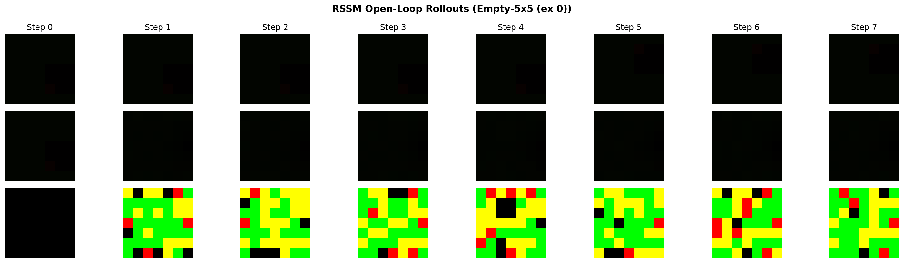
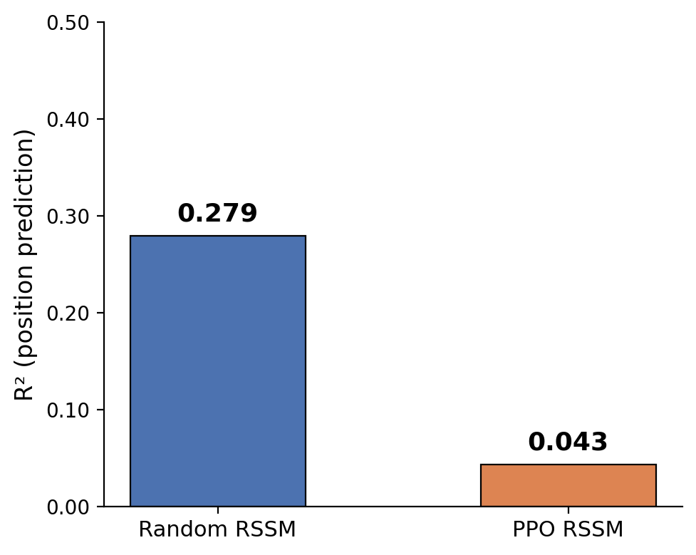
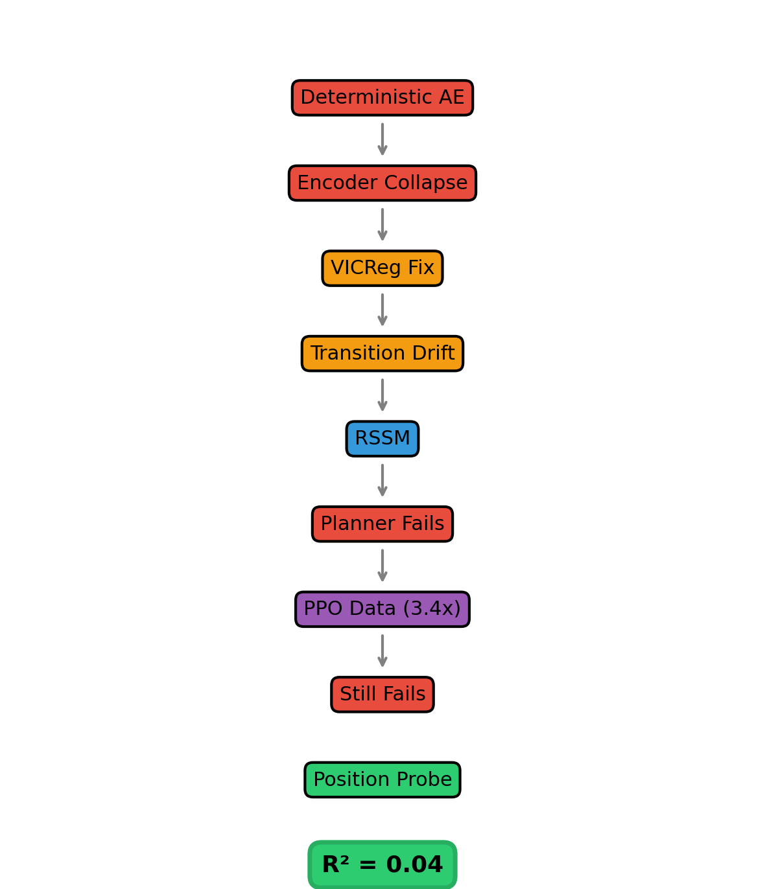

Latent world models offer a principled approach to model-based reinforcement learning: learn a compressed representation of observations, predict transitions in that latent space, and plan via latent rollouts. In practice, this pipeline is fragile. We build an RSSM-based world model on MiniGrid navigation tasks and document four distinct collapse modes — encoder collapse, transition collapse, reward collapse, and planning distribution shift — along with a critical preprocessing bug. After fixing these, the RSSM achieves stable 6-step open-loop rollouts (MSE ~0.01) with accurate goal-state classification, yet the CEM planner performs at chance. A heuristic-reward ablation confirms the world model’s control-relevant precision — not the reward predictor — is the bottleneck. We test the data-coverage hypothesis by collecting 10x more goal-directed trajectories (PPO-mixed, 281k transitions, 82.5% success) and retraining the same architecture. Planning does not improve. A linear probe for agent position from RSSM latents achieves R² = 0.04, demonstrating that the latent representation encodes almost no spatial information despite near-perfect reconstruction. Our results suggest that reconstruction quality alone appears to be an insufficient indicator of planning utility and that control-relevant representation — rather than data quantity — may be the critical bottleneck.
Latent world models compress high-dimensional observations into a structured latent space, learn a dynamics model in that space, and use it for planning or policy optimization. Dreamer [1], PlaNet [2], and TD-MPC [3] have demonstrated impressive results across Atari, DM-Control, and robotics domains.
The standard recipe is deceptively simple: collect experience, train an encoder and decoder, train a transition model, train a reward predictor, and plan via latent rollouts. Step 5 rarely works on the first attempt. The research literature focuses on successes; the failure modes that dominate early iterations are underdocumented.
This paper provides a systematic investigation of why latent-world-model planners fail — even when the world model appears successful under standard reconstruction and rollout metrics. We make the following contributions:
Recurrent State-Space Models (RSSMs) [2, 1, 4, 5] maintain a deterministic recurrent state h_t and a stochastic latent z_t ~ q(z_t | h_t, o_t), with a learned prior p(z_t | h_t) enabling open-loop rollouts. Training minimizes an ELBO combining reconstruction, KL divergence, and reward prediction. TD-MPC [3, 6] replaces the decoder with temporal-difference learning in latent space.
VICReg [7] prevents collapse through variance and covariance regularization. SimSiam [8] and BYOL [9] use architectural asymmetries to the same end. In the world-model setting, collapse manifests as the encoder mapping all inputs to a small latent region, allowing the transition model to trivially predict z_{t+1} ≈ z_t.
CEM planning [10] and MPC are standard for latent planning. MuZero [11] learns a value-equivalent model and plans via MCTS. A key challenge is distribution shift: planners evaluate prior-rollout latents while reward predictors are trained on posterior-encoded latents. Dreamer addresses this with a value function trained on prior-rollout data.
Several prior works have identified the gap between reconstruction and planning objectives. Lambert et al. [15] formalize “objective mismatch” in model-based RL: the model’s training objective (pixel MSE, prediction error) does not align with the planner’s objective (task reward). Janner et al. [16] demonstrate that model-based policy optimization requires careful regularization to avoid exploitation of model errors. Our work extends these findings by providing a concrete mechanistic explanation — the latent representation fails to encode control-relevant position information (R² = 0.04) — rather than treating the mismatch as a black-box phenomenon.
MiniGrid [12] provides partially observable grid-world tasks with 7x7x3 image observations (pixel values in {0, 1, 2, 5, 8}) and sparse terminal rewards. Previous work has noted that random-policy data leads to poor dynamics learning [13], but a systematic decomposition of failure modes has been lacking.
We use two MiniGrid [12] navigation tasks:
Both environments return 7x7x3 RGB observations with pixel values in {0, 1, 2, 5, 8}. Rewards are sparse and terminal: +1 on reaching the goal, 0 otherwise.
| Dataset | Episodes | Transitions | Success Rate | Mean Length |
|---|---|---|---|---|
| Random (Empty-5x5) | 1,000 | 83,212 | 39.3% | 83.2 |
| Random (FourRooms) | 1,000 | 196,257 | 3.8% | — |
| PPO-mixed | 10,000 | 281,441 | 82.5% | 28.1 |
The PPO-mixed dataset is collected by a partially-trained PPO policy with 70/30 action ratio (PPO/random), providing 10x more episodes with goal-directed behavior.
All observations are normalized by dividing by 8 (the maximum pixel value). This preprocessing is critical: observations divided by 255 produce a decoder output range [0, 1] against ground-truth values in [0, 0.031], yielding a meaningless reconstruction loss.
Our architecture follows PlaNet [2] and DreamerV1 [1]:
Total parameters: 1.18M. Latent dimension: 64. GRU dimension: 256. Action dimension: 7 (one-hot). An overview of the complete pipeline and failure progression is shown in Figure 1.
We train in three stages to stabilize the full objective:
Stage A (Autoencoder Warmup): Train trunk, posterior, decoder with weak KL to N(0, I): L_A = ||ô_t - o_t||² + β · KL(q(z_t | o_t) || N(0, I)), β = 0.001
Stage B (Dynamics): Add GRU and learned prior: L_B = ||ô_t - o_t||² + β · KL(q(z_t | h_t, o_t) || p(z_t | h_t)), β = 0.1
Stage C (Latent Overshooting): Add multi-step consistency: L_C = L_B + Σ_{k∈{1,3,5}} w_k · KL(sg[q(z_{t+k})] || p(z_{t+k} | h_t)), w = [1.0, 0.5, 0.25]
The overshoot weight w_k decreases with step count, prioritizing short-horizon consistency.
Before the RSSM, the deterministic encoder collapsed to pairwise distance ~0.0075. We apply VICReg [7]: L_VICReg = λ_v · ReLU(1 - std(z)) + λ_c · Σ_{i≠j} [Cov(z)]_{ij}²
This expands the latent representation to std ≈ 0.84 with pairwise distance 12.7. The RSSM trunk is initialized from the VICReg-trained encoder.
Binary goal-conditioned classifier: r̂ = σ(MLP([z_t, z_g])). Trained with Hindsight Experience Replay [14]: 50% goal pairs (label 1), 50% random non-goal pairs (label 0). Binary cross-entropy avoids the saturation problem of soft-distance HER formulations.
Cross-Entropy Method [10] planning in latent space: sample N action sequences of horizon H, rollout through the RSSM prior, score with reward predictor, select top E elites, refit distribution, iterate. Defaults: N = 256, E = 16, I = 5, H = 4 (Empty-5x5), H = 6 (FourRooms).
The first deterministic autoencoder (CNN encoder, MLP transition, CNN decoder) fails catastrophically:
| Metric | Empty-5x5 | FourRooms |
|---|---|---|
| Recon MSE | 5.22 (artifact) | 1.29 |
| Transition MSE | 3 × 10⁻⁷ | 3 × 10⁻⁷ |
The reconstruction MSE of 5.22 is entirely attributable to the normalization bug (dividing by 255 instead of 8). After correction, the baseline is MSE 0.067.
The CEM planner on this collapsed model achieves 0% on Empty-5x5 where a random policy succeeds 43.3% of the time.

The three-stage curriculum produces a stable world model on random data (83k transitions):
Stage A: Recon 0.0022, KL 2.56, posterior std 0.98. Stage B: Recon 0.0093, KL 0.015, prior/post std ~0.99. Stage C: Recon 0.0092, overshoot 0.64.
Open-loop rollouts remain stable across 6 steps:
| Step | 1 | 2 | 3 | 4 | 5 | 6 |
|---|---|---|---|---|---|---|
| MSE | 0.0066 | 0.0094 | 0.0126 | 0.0100 | 0.0088 | 0.0115 |
The binary HER reward predictor achieves 97.6% accuracy on posterior-encoded states. RSSM CEM planner results:
| Method | Empty-5x5 | FourRooms |
|---|---|---|
| Random | 23% | 5% |
| RSSM Planner | 30% | 5% |
To isolate whether the bottleneck is the reward predictor or the world model, we replace the learned reward with pixel-space distance to goal (an oracle). If the reward predictor is the problem, an oracle should enable planning.
| Seed | Random | Heuristic Planner |
|---|---|---|
| 1 | 25% | 40% |
| 2 | 25% | 30% |
| 3 | 25% | 17% |
| 4 | 25% | 23% |
| Avg | 25% | 23% |
Average 23% (±7%) — not significantly different from random. The world model’s control-relevant precision, not the reward predictor, is the bottleneck.
The preceding results implicate the world model’s prediction quality. A natural hypothesis is data coverage: the random dataset (83k transitions, 39.3% success) lacks diverse goal-directed sequences. We test this by collecting a PPO-mixed dataset (281k transitions, 82.5% success) and retraining the identical RSSM architecture.
| Metric | Random Data | PPO Data |
|---|---|---|
| Transitions | 83k | 281k |
| Success rate | 39.3% | 82.5% |
| Stage A recon | 0.0022 | 0.0010 |
| Stage C overshoot | 0.64 | 0.43 |
| Reward predictor acc | 97.6% | 98.2% |
| Random baseline | 23% | 17-35% |
| Learned planner | 30% | 10% |
| Heuristic planner | 23% | 30% |
Despite 3.4x more transitions and 2x more goal-directed data, planning does not meaningfully improve. This partially falsifies the data-coverage hypothesis.
| Stage | Recon | Planner | Main Failure |
|---|---|---|---|
| Deterministic AE | 5.22 (artifact) | 0% | Encoder + transition collapse |
| +VICReg | 0.067 | 0% | OOD drift after 2-3 steps |
| RSSM (random data) | 0.0092 | 30% | Position encoding (R² = 0.28) |
| RSSM (PPO data) | 0.0010 | 10% | Position encoding (R² = 0.04) |
If the latent space is the bottleneck, how much control-relevant information does it encode? We train a linear probe — a single linear layer mapping 64-dim latents to (x, y) agent position — on posterior-encoded latents.
| Metric | Random RSSM | PPO RSSM |
|---|---|---|
| Test RMSE (cells) | 0.664 | 0.758 |
| Baseline (mean) | 0.783 | 0.775 |
| R² | 0.279 | 0.043 |
The random-data RSSM captures modest position information (R² = 0.28). The PPO-data RSSM captures essentially none (R² = 0.04). This counterintuitive result — more data yielding worse position encoding — has a consistent explanation: the PPO policy takes efficient center paths (mean length 28 steps vs 83), producing a spatially narrow data distribution. The RSSM optimizes for reconstruction, not position tracking; with less positional variation in training data, the latent space has less incentive to encode position. The random-policy data, with its aimless wandering, provides more spatial diversity and thus more position-identifiable latents.

This result provides a mechanistic explanation for the planner’s failure despite strong reconstruction metrics. The latent representation encodes almost no agent-position information (R² = 0.04) while achieving near-perfect pixel reconstruction (MSE 0.009). On a 7x7 grid where most pixels are walls, the reconstruction objective has no reason to prioritize single-cell position accuracy over wall-color accuracy — but the planner needs exact position to navigate.
We identify four collapse modes and one critical preprocessing error that practitioners should systematically check.

Problem: MiniGrid observations use pixel values in {0, 1, 2, 5, 8}. Dividing by 255 places sigmoid-decoder outputs [0, 1] against targets [0, 0.031], producing a loss that appears meaningful while measuring different scales.
Fix: Divide by 8. Reconstruction MSE drops from 5.22 to 0.067 — a 98.7% reduction with no architectural change.
Lesson: Always verify preprocessing matches the model’s output distribution.
Mechanism: MSE reconstruction is dominated by static wall pixels. The encoder outputs a near-constant vector; the decoder renders the average frame.
Symptom: Pairwise latent distance ~0.0075. Per-dimension std ~0.0.
Detection: Compute pairwise Euclidean distance on encoder outputs. If mean distance is far below the latent dimension norm, collapse is active.
Fix: VICReg (variance + covariance regularization). Post-fix: pairwise distance 12.7, std 0.84.
Mechanism: A deterministic MLP with LayerNorm can learn identity as a low-loss fixed point, especially when the dataset has many no-op transitions.
Symptom: Training MSE < 10⁻⁶. Multi-step error does not grow with horizon.
Detection: Compare ||z_{t+1} - z_t|| against ||ẑ_{t+1} - z_t|| per action. If predicted change is near-zero while true change is non-zero, collapse is active.
Fix: Residual parameterization z_{t+1} = z_t + α·Δ, or RSSM’s stochastic latent with KL divergence.
Mechanism: Sparse terminal rewards (>99.9% zero) cause the predictor to converge to a constant near zero. Compounded by encoder collapse: indistinguishable latents make separation impossible.
Symptom: Predictor output constant across all states.
Detection: Histogram of reward predictions. If all values fall in a narrow band, collapse is active.
Fix: Binary HER with 50/50 goal/non-goal sampling creates a balanced classification task.
Mechanism: The reward predictor is trained on posterior-encoded latents z ~ q(z | h, o). At planning time, it evaluates prior-predicted latents ẑ ~ p(z | h, a). Posterior latents are corrected by the observation; prior latents accumulate open-loop error.
Symptom: High reward on posterior states (~0.86), zero reward on prior rollouts (~0.00).
Detection: Compare predictor output on posterior vs prior latents for the same state.
Status: De-prioritized after the heuristic-reward ablation (Section 4.4) showed that even an oracle reward signal cannot guide planning. The world model itself is the bottleneck.
The heuristic-reward ablation and position probe together pin down the root cause. The RSSM achieves pixel MSE of 0.009 and stable rollouts, but a linear probe for position achieves R² = 0.04. The reconstruction objective does not prioritize single-cell position accuracy, yet the planner requires exactly that.
Central finding: Pixel-level prediction quality is necessary but not sufficient for planning with learned world models. Reconstruction metrics and control-relevant representation quality are not aligned on MiniGrid, and this misalignment is the fundamental bottleneck.
Our results suggest the RSSM latent representation captures reconstruction-relevant information more effectively than control-relevant information. This manifests concretely: the latent space renders passable images (MSE 0.009) but does not linearly encode the agent’s position (R² = 0.04). The PPO experiment confirms that collecting more goal-directed data does not close this gap — the latent structure, not data coverage, is the bottleneck.
The PPO experiment is valuable precisely because it produced a negative result. Three hypotheses are ruled out or weakened:
The remaining hypotheses — control-irrelevant latent structure, insufficient network capacity, planner limitations, and the value-function gap — are all candidate directions for future investigation.
The position-probe diagnostic (R² = 0.04) suggests that representations explicitly designed for control may be necessary. Promising directions include:
The linear probe can serve as a lightweight validation for any of these approaches: train a linear layer to predict the agent’s position from latents. If R² is low, the representation is not planning-ready.
We built a latent-world-model planner for MiniGrid navigation, progressed through four collapse modes to a working RSSM, and found that planning remained at chance. A heuristic-reward ablation isolated the world model as the bottleneck. A 3.4x larger PPO-mixed dataset improved reconstruction but not planning, partially falsifying the data-coverage hypothesis.
The position probe provides the mechanistic explanation: a linear layer trained to predict (x, y) from RSSM latents achieves R² = 0.04. The latent space does not encode control-relevant spatial information, even though it reconstructs images with MSE 0.009. Reconstruction quality and planning utility are not aligned, and this misalignment — not data coverage — is the fundamental challenge facing latent-world-model planning on MiniGrid.
[1] Hafner et al., “Dream to Control: Learning Behaviors by Latent Imagination,” ICLR 2020. [2] Hafner et al., “Learning Latent Dynamics for Planning from Pixels,” ICML 2019. [3] Hansen et al., “Temporal Difference Learning for Model Predictive Control,” ICML 2022. [4] Hafner et al., “Mastering Atari with Discrete World Models,” ICLR 2021. [5] Hafner et al., “DreamerV3: Mastering Diverse Domains through World Models,” arXiv 2023. [6] Hansen et al., “TD-MPC2: Scalable, Robust World Models for Continuous Control,” arXiv 2023. [7] Bardes et al., “VICReg: Variance-Invariance-Covariance Regularization for Self-Supervised Learning,” ICLR 2022. [8] Chen & He, “Exploring Simple Siamese Representation Learning,” CVPR 2021. [9] Grill et al., “Bootstrap Your Own Latent,” NeurIPS 2020. [10] Rubinstein, “The Cross-Entropy Method for Combinatorial and Continuous Optimization,” 1999. [11] Schrittwieser et al., “Mastering Atari, Go, Chess and Shogi by Planning with a Learned Model,” Nature 2020. [12] Chevalier-Boisvert et al., “MiniGrid: A Minimalistic Gridworld Environment,” 2018. [13] Sekani et al., “Learning World Models on MiniGrid,” 2021. [14] Andrychowicz et al., “Hindsight Experience Replay,” NeurIPS 2017. [15] Lambert et al., “Objective Mismatch in Model-based Reinforcement Learning,” arXiv 2020. [16] Janner et al., “When to Trust Your Model: Model-Based Policy Optimization,” NeurIPS 2019.